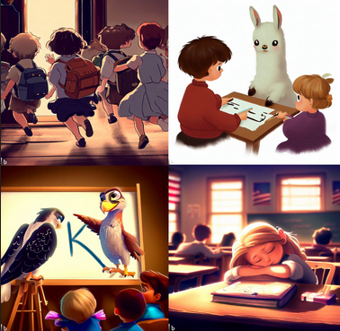

Vous désirez intégrer la liste de diffusion ? L’inscription se fait ici.
C’est la rentrée ! Comme les élèves qui reviennent sur les bancs des écoles, les modèles de machine learning ont périodiquement besoin de mettre à jour leurs connaissances.
Cette newsletter sera consacrée aux enjeux du ré-entrainement et de la spécialisation de modèles, une question d’actualité suite à la publication estivale de plusieurs grands modèles de langage (LLM) open source.
La première partie de cette newsletter se concentrera sur les enjeux principaux. La suite sera plus technique et évoquera plus en détail certains modèles et les méthodes de ré-entrainement.
Enjeux associés au réentrainement des modèles de langage
Un entraînement ex nihilo hors de portée
Si de nombreuses tâches de modélisation ne nécessitent pas des modèles très sophistiqués, deux domaines de recherche - à savoir le traitement naturel du langage (NLP) et l’analyse d’image - ont connu ces dernières années des innovations importantes grâce à des réseaux de neurones à l’architecture de plus en plus complexe.
Pour être en mesure d’entraîner un modèle complexe, du type grand modèle de langage (LLM), il faut, a minima, disposer des intrants suivants:
- Un immense volume de données déstructurées. La constitution de ces corpus implique le moissonnage en masse de ressources en ligne, ce qui n’est pas sans poser des enjeux juridiques de propriété intellectuelle qui ne sont pas encore résolus. La récupération de ces données nécessite une bonne connaissance de la structure et la nature des données nécessaires pour entrainer un modèle ;
- Des ressources informatiques hors du commun. Les investissements importants pour les cartes graphiques (GPU), une matière première en pénurie et les coûts courants associés (électricité, maintenance…) font qu’une poignée d’acteurs du numérique disposent des moyens financiers adéquats pour entraîner un modèle ex nihilo. Cet article de Forbes évoque des montants de l’ordre de plusieurs dizaines voire centaines de millions de dollars.
- Des experts aux compétences à l’intersection entre la recherche en mathématique et informatique ainsi que des spécialistes en data engineering actuellement en pénurie sur le marché du travail.
La combinaison de ces facteurs rend difficile, si ce n’est impossible, l’entrainement ex nihilo de tels modèles par la majorité des acteurs de la donnée. Seule une poignée de centres de recherche diposent des ressources permettant d’entraîner ex nihilo ce type de modèles.
La réutilisation en pratique
Néanmoins, les besoins d’utilisation de ces modèles dépassent le cercle des acteurs en mesure de les entraîner. En effet, les grands modèles de langage sont généralement entraînés sur des corpus génériques de langage naturel principalement issus d’internet (Table 1). Cela les rend capables de comprendre les interactions avec des utilisateurs, notamment leurs instructions (prompt) et d’interagir avec eux de manière assez naturelle.
Néanmoins, pour des tâches très spécialisées ou alors face à des corpus particuliers, ces modèles génériques peuvent nécessiter d’être spécialisés pour obtenir de meilleures performances. Plusieurs types de techniques, de complexité graduelle, ont ainsi émergé pour être en mesure de réutiliser et améliorer un modèle pré-entraîné.
Un frein à la réutilisation massive de modèles pré-entraînés est la nature propriétaire de certains modèles, dont les conditions de réutilisation peuvent être limitantes. Pour cette raison, l’émergence de modèles open source, dont la structure est plus transparente et dont les conditions de réutilisation sur des infrastructures internes sont moins restrictives, est devenu ces derniers mois un enjeu important dans l’écosystème de la donnée.
Les discussions sur l’ouverture des modèles s’inscrivent dans le contexte d’un affrontement important entre deux visions du modèle économique du secteur numérique : si le co-créateur d’OpenAI a pu affirmer, pour justifier l’absence de transparence scientifique sur les modèles d’OpenAI “[on openly sharing research,] we were wrong”, un mémo interne de Google défendait quant à lui l’idée que les modèles open source sont amenés à prendre le dessus, car ils peuvent bénéficier à plus grande échelle du travail d’experts et de retours d’utilisateurs.
La publication cet été de deux modèles open source (LLaMA-2 par Meta et Falcon par l’Institut de l’innovation technologique d’Abu Dhabi) ouvre de nouvelles perspectives pour une réutilisation de modèles dans une infrastructure interne, à condition de disposer des ressources computationnelles suffisantes et d’une stratégie adaptée de ré-apprentissage.
Pour aller plus loin sur ce sujet, la suite de cette newsletter évoque des détails plus techniques. La masterclass sur le sujet du fine-tuning que nous organisons avec datascientest (plus d’informations 👇️) permettra également d’approfondir cette question.
Falcon
| Source de données | Proportion dans le corpus |
|---|---|
RefinedWeb-English (webscraping) |
75% |
RefinedWeb-Europe (webscraping) |
7% |
| Livres | 6% |
Sites de conversations (Reddit, StackOverflow, HackerNews…) |
5% |
Code (Github…) |
5% |
Documents techniques (arXiv, PubMed…) |
2% |
Actualités des modèles de langage
De nouveaux grands modèles de langage (LLM)
Pas de vacances pour les principaux acteurs de la data science ! Ce champ de recherche appliquée continue à connaître une actualité dense avec la publication, cet été, de deux modèles importants:
LLaMA-2par Meta, disponible en versions 7B, 13B et 70B c’est-à-dire, respectivement, 7, 13 et 70 milliards de paramètres. Dans le domaine des LLM actuels, c’est donc un modèle plutôt minimaliste (GPT-3comportait 175 milliards de paramètres,GPT-4en comporterait 1.7 trillions soit 1700 milliards). Le site webLeBonLLMpropose, déjà, des exemples de fine tuning deLLaMa;Falconpar l’Institut d’Innovation et de Technologie d’Abu Dhabi. Falcon-40B avait déjà connu, cet été, un engouement important en se plaçant en tête des réutilisations surHuggingFace. Falcon 180B, sorti il y a quelques jours, rapproche les performances de celles des modèles propriétaires.
Ces deux modèles permettent d’envisager des réutilisations après un ré-entrainement sur des jeux de données ad hoc pour améliorer leurs performances (technique du fine tuning). Ceci est possible grâce à leurs licences permissives de réutilisation. Celle de Falcon est assez standard puisqu’il s’agit d’une Apache 2.0. Celle de LLaMA-2 est quant à elle moins traditionnelle. La réutilisation est libre, y compris à des fins commerciale, sauf pour les gros acteurs du numérique, globalement les concurrents de Meta :
- Additional Commercial Terms. If, on the Llama 2 version release date, the monthly active users of the products or services made available by or for Licensee, or Licensee’s affiliates, is greater than 700 million monthly active users in the preceding calendar month, you must request a license from Meta, which Meta may grant to you in its sole discretion, and you are not authorized to exercise any of the rights under this Agreement unless or until Meta otherwise expressly grants you such rights.
Le réentrainement des modèles
L’ouverture de ces modèles laisse envisager des réutilisations sur de nouveaux jeux de données dans des infrastructures internes. Cet été, Andrew Ng, dans sa newsletter, est revenu sur les méthodes pour affiner les performances d’un modèle sur des données qu’il n’a pas rencontrées dans son corpus d’entraînement.
- La technique la plus simple est d’affiner les instructions (prompt) fournies à un modèle. Pour faire l’analogie avec l’apprentissage humain, pour obtenir une réponse mieux ciblée à une question, il est souvent nécessaire de reformuler une question. Par exemple, lors d’une interaction avec une IA assistante de code, il peut être utile de guider un LLM avec une instruction “as a data scientist” ;
- Fournir quelques exemples à un modèle (few shot learning). De même qu’avec les humains, fournir un petit nombre d’exemples peut suffire à un modèle, par un raisonnement inductif, à comprendre et répondre de manière juste à son instructeur. Selon la difficulté de la tâche à mettre en oeuvre, il peut suffire de très peu de cas pour spécialiser un modèle en modifiant les dernières couches du réseau de neurone.
- Fournir de nouvelles sources à un modèle avant de l’interroger (retrieval augmented generation). Cette technique consiste à enrichir la base de connaissance d’un modèle pré-entraîné avec un nouveau corpus puis l’interroger sur la même thématique afin, par exemple, d’obtenir une synthèse ou alors une information contenue dans les documents mais nécessitant un temps d’extraction non négligeable à un humain. Dans cette approche, il ne s’agit pas de réentrainer le modèle pour mettre à jour ses paramètres mais de lui donner plus de contexte pour améliorer la pertinence des prédictions ou réponses du modèle. Pour continuer l’analogie avec l’apprentissage humain, cette technique se rapproche d’une situation où un humain assimile une bibliographie pour rentrer dans un nouveau sujet.
- Réentrainement par spécialisation (fine tuning) pour affiner le modèle sur une tâche donnée. Il s’agit d’une approche qui peut ressembler à l’apprentissage d’une nouvelle langue pour un humain: à partir d’un certain stock de connaissances antérieures (une langue natale), on accumule en série des exemples bien choisis pour améliorer la compréhension d’une autre langue. Cette approche permet une économie de ressources puisqu’elle consiste à spécialiser un modèle généraliste mais nécessite que la nature du problème pour lequel est ré-entrainé un modèle ressemble à celle pour lequel le modèle a été entraîné. De même qu’essayer de transposer des règles d’une langue latine aidera peu à apprendre le japonais, spécialiser un modèle d’analyse d’image pour une tâche de classification de données textuelles sera inefficace.
Le fine tuning est ainsi une solution intéressante à condition d’avoir testé si des approches plus simples n’apportent pas déjà des solutions satisfaisantes.
De plus, pour être en mesure de fine tuner un modèle, outre l’accès à des ressources computationnelles conséquentes (mais tout de même moindres qu’un entraînement ex nihilo), beaucoup de méthodes nécessitent de disposer de données labellisées, c’est-à-dire impliquent de posséder une base de données permettant de juger de la qualité des prédictions du modèle. Pour pallier cette absence, il est possible de mettre en oeuvre un processus humain d’annotation et fournir au modèle ces évaluations pour l’amener à s’améliorer (technique nommée reinforcement learning from human feedback).
Comme l’évoque encore Andrew Ng, l’accès à des modèles pré-entraînés change le cycle de développement des projets utilisateurs d’IA. Ces projets ne consistent plus, comme les logiciels classiques, à développer en amont des spécifications puis déployer un modèle correspondant à celles-ci mais, au contraire, à commencer par mettre en oeuvre rapidement un premier modèle dont le comportement sera évalué et amélioré en continu par des méthodes comme l’apprentissage par renforcement.
Le reste de l’actualité
- La commission d’accès aux documents administratifs (CADA) a rendu un avis sur le sujet de la publication en open source des modèles d’apprentissage entraînés par l’administration française ;
- Une association française a émergé pour rassembler des ressources et offrir un espace communautaire autour des LLM francophones: Le Bon LLM ;
- La qualité des réponses de
ChatGPTpourrait s’être dégradée au cours du temps ; - Le Financial Times présente de manière très pédagogique le fonctionnement des LLM ;
- Meta publie
Nougat, un modèle très efficace de numérisation de PDF ; - Le risque de disparition d’emplois d’acteurs et scénaristes du fait des IA génératrices est l’un des facteurs à l’origine de la grève à Hollywood (voir Le Monde) ;
- Le modèle open source de génération d’images
StableDiffusionsort une version XL (sdxl)
améliorant encore la qualité des productions (interface ici); - OpenAI intègre une nouvelle version de son générateur d’image (
Dall-E 3) dansChatGPT Plus(annonce) ; - La dernière revue de presse de la Gazette BlueHats #24 recense de nombreux articles sur l’IA ;
- Un site interactif riche de nombreuses data visualisations est associé au nouvel ouvrage de Thomas Piketty et Julia Cagé, Une histoire du conflit politique.
Événements
Masterclass datascientest sur le fine-tuning

Notre cycle de masterclass organisées en lien avec datascientest continue !
Après avoir exploré en détail les thématiques du traitement automatique du langage et de l’analyse d’image, nous progressons dans notre parcours avec le sujet du fine tuning.
Au programme:
- Réutilisation de transformers (
BERT) et de LLM (LLaMA) avec les librairies d’HuggingFace; - Fine tuning de ces modèles.
Rendez-vous le 6 octobre de 10h à 12h ! Inscription ici
Autres événements
Quelques événements ou informations intéressantes :
- Hackathon velib, fermeture des inscriptions le 29 septembre ;
- Hackathon de l’ONU: fermeture des inscriptions à la fin du mois ;
- Prix du jeune statisticien de l’IAOS : article à envoyer avant le 10 février 2024.
Les personnes intéressées par former une équipe pour les hackathons peuvent contacter ssphub-contact@insee.fr.
Rejoindre le salon Tchap SSP Hub
Pour échanger autour des activités du réseau et, plus largement, discuter entre pairs des sujets data science, il existe un salon SSP Hub dans la messagerie sécurisée de l’État Tchap. Celui-ci réunit plus de 250 personnes et permet des échanges plus directs, plus fréquents et plus informels que la liste de diffusion mail.
Si vous avez un compte sur Tchap, vous pouvez rejoindre ce salon en cherchant celui-ci par son nom « SSP Hub ». En cas de problème pour le rejoindre, n’hésitez pas à envoyer un mail à ssphub-contact@insee.fr.